前段时间，360网盘即将关停服务的消息在网上引起了不小的风波，这已经不是第一次出现互联网免费服务突然关停了，相信也不会是最后一次，毕竟大家都是出来做企业的，没有义务一直为你提供免费的服务，当确定在这一领域没有盈利可期时，服务关停也就是必然的事了。
这里我们不去讨论和批判所谓的互联网文化，我们说点做点更务实的事情。既然免费云存储是不可靠不安全的，那么作为个人用户，还有什么更好的数据存储选择呢？这就是我们今天要说的主角：家庭网络存储，也就是家用NAS（Network Attached Storage）。话不多说，先上家里的网络架构图。
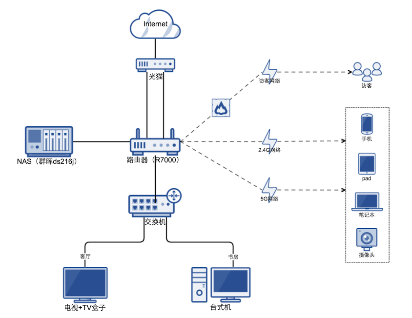
路由
从图中可以看出，路由器在整个架构中是核心的存在，科学上网（翻墙）靠它，双拨（贷款翻倍）靠它，稳定可隔离的无线网络也靠它。所以尽量买个好点的吧，这里推荐网件R7000或华硕AC68U，活动期间买，价格应该在600到1000之间。由于我们要把路由器刷成梅林系统，所有购买其他型号之前先在http://firmware.koolshare.cn这里确认一下硬件是否支持对应的系统。
刷机
拿到路由器后，先按照说明书操作，进入Netgear的管理页面，默认的用户名密码写在路由器的背面。自带的系统界面如下，看起来确实比较没有档次。不过反正马上就要再见了，无所谓啦。
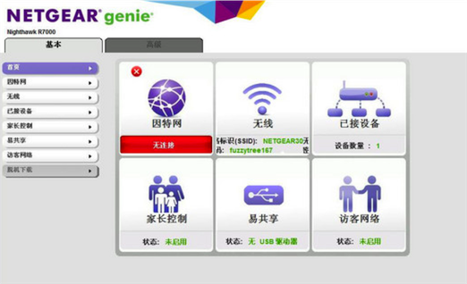
刷机的教程网上有很多，这里就不赘述了，推荐参照这个帖子进行刷机：
R7000刷改版梅林 http://koolshare.cn/thread-49247-1-1.html
刷机完成，成功联网后你会看到如下界面。
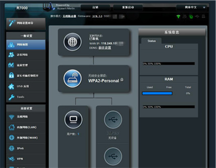
双拨
什么是双拨？双拨是指通过路由器进行两次独立的上网拨号，而路由器本身会对两条线路做负责均衡，以此达到宽带翻倍的目的。要注意，现在很多电信宽带默认是在光猫上进行拨号的，我们需要把他改为路由器拨号，如果不知道账号密码，可以打10000号查询。
双拨比较简单，只需要把lan1设置为拨号端口，并连到光猫上进行拨号就可以了，如果光猫只有两个网口（一个itv，一个网络）那就没法直接进行双拨，这种情况可以通过光猫后面先接交互机，然后路由器再连到交换机进行双拨。具体的教程可以参考：
梅林双拨教程
成功后就可以看到如下界面了。（注意，拨号用的网线最好都采用千兆网线）
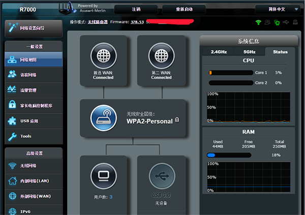
科学上网
上网的速度已经够快了，但是上网的姿势还有些不对，想看youtube，想查Google怎么办。这时候就必须要祭出科学上网神奇SS(Shadowsocks)了，我认为这也是梅林固件最大的有点，自带了SS客户端，在“网络工具”中可以找到。在启用SS之前，首先需要一个可用的SS服务器，网上有提供一些免费的，但大都不好用，毕竟好的服务本来就应该是收费的。这里推荐我正在用的“搬瓦工“VPS，价格实惠，速度够快，操作够方便。
搬瓦工主页 https://bandwagonhost.com/
在便宜的VPS主机中选择19刀每年的，使用IAMSMART571GOR优惠码再节省5%。
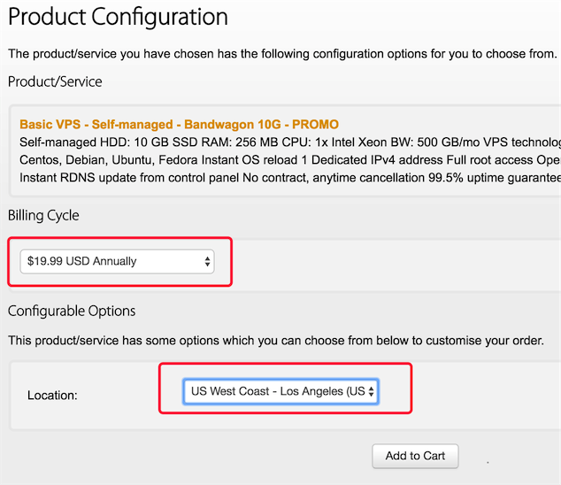
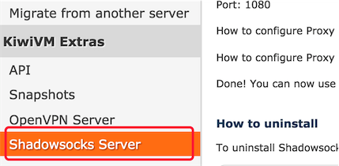
购买成功后进入主机管理界面，找到Shadowsocks Server，按提示开启即可，如果你觉得你没什么绝密信息的话，可以把加密方式改为rc4-md5，稍微能快点。开启SS后，记好端口密码。然后在回到路由器SS客户端界面，设置好对应的参数，这里最好选择GFWlist模式，最后开启SS开关。
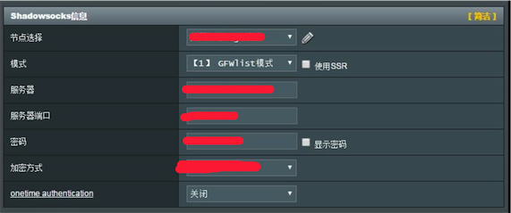
好了，下面就是激动人心的时刻，去打开https://www.google.com.hk/吧。然而过一会你就会发现看youtube视频并不怎么流畅，因为还有一件事要做，通过net_speeder对网络进行加速（其实就是改了主机的TCP协议栈）。安装过程很简单，只需要执行一个sh脚本即可：
net_speeder安装 http://www.jianshu.com/p/f136b30ca3ba
完成后再去试试youtube吧，亲测720P毫无压力。
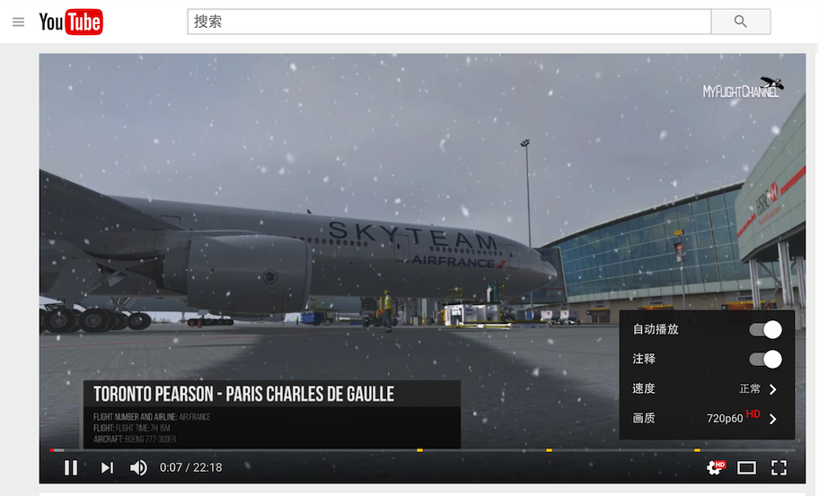
NAS
路由器部分的工作已完成，接下来就是NAS部分了。网络上有很多关于NAS的文章，有各种牌子的硬件产商，也有人用废弃的电脑自己改装黑群晖。各种选择理由就不多说了，这里推荐使用群晖的家用NAS，家用一般是2盘位和4盘位，然后又分别分为se、j、play、+四个版本，这个每个人根据自己的情况选择就可以了，需要说明的是216中只有play以上版本才支持视频解码，只有+版本是支持docker的，根据自己的需求注意别买错了。
主机选好了，还差硬盘，硬盘没太多可说的，最普遍的肯定是西数红盘，号称专为NAS打造（贵呀）。买硬盘时需要注意自己的需求，如果两盘位想要做raid的，那么单盘最好买的大一点，因为实际使用容量只有一个盘的大小。不做raid的就随意了。4T的西数红盘现在加个在1k左右。
硬件到手后，按照说明组装好，接到路由器上（用群晖自带千兆网线）。在路由器的管理界面中找到NAS的内网地址，就可以从浏览器进入NAS了。首次进入会开始安装系统，目前已经是DSM6.0了。设置好系统以后，进入系统，这是一个简单的基于linux改造的文件系统。在控制面板的QuickConnect和外部访问中设置DDNS和对应的外网访问端口。
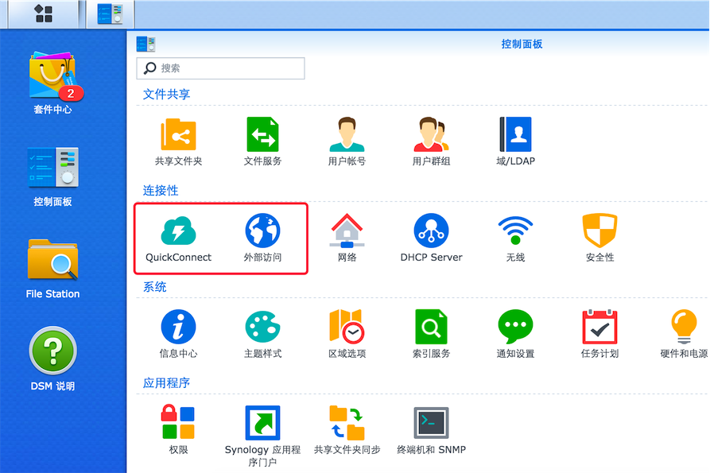
最后在浏览器中用域名或公网ip进行访问就可以了。如果访问不通，就检查一下路由器上的端口映射配置。NAS就安装好了，系统的许多功能特性这里就不一一介绍了，比较常有的用户系统、windows/mac文件共享备份等等。系统中还有很多实用工具，大家可以在使用中自己摸索。比如常用的PhotoStation、VedioStation、DownloadStation等等。这里举一个比较有用的例子，在”套件中心“里找到CloudSync并安装。
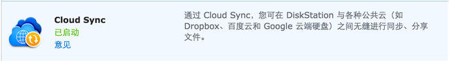
安装完后打开，选择用来做同步备份的网络云盘，比如百度云。按照提示设置完成后就可以让NAS的指定文件夹和百度云的数据同步，这个功能对于不做raid的情况是非常实用的，相当于用网络云盘做重要数据的备份。也可以快速的将网络上的百度云盘资源同步到NAS中。
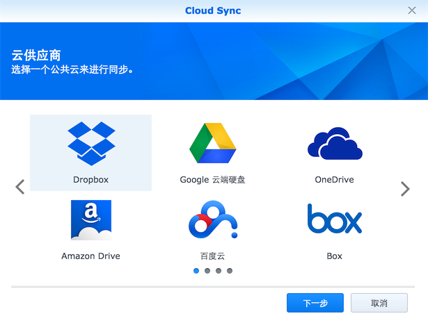
NAS在家庭中还有一个非常实用的功能，那就是和所有屏幕互通，在手机、pad、电视、电脑上都可以访问NAS中的数据，比如会将所有视频，家庭照片都放在上面，在其他设备上上可以随意观看。想象一下，白天看到一个想看的高清电影或美剧，只要打开NAS开始下载。晚上到家就可以在高清大屏电视上看到了，是不是很爽呢？！
总结
还有很多详细的实施步骤没有在这里一一详述，如果有问题可以联系我：licheng_xd@163.com